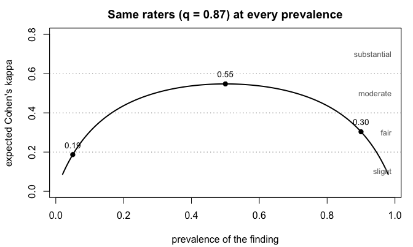
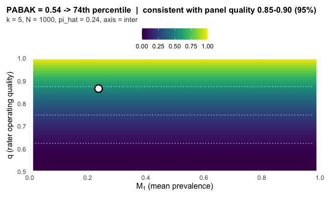

grassr: rater reliability on binary outcomes, from rating matrix to Report Card
Austin Semmel
Rachel Gidaro
2026-07-25
Source:vignettes/grassr.Rmd
grassr.RmdThe data: a rater panel
A rater panel is k raters who each
score the same N subjects on one binary question. The
subjects are whatever is being rated. The raters are whoever rates them,
human or machine. Each rater sees every subject exactly once and answers
the same yes-or-no question about it, so the study produces
N x k binary calls and nothing else. Chest films read for a
finding, adverse events judged preventable or not, transcripts coded for
a symptom mention: different fields, same object.
That object is the package’s entire input, laid out as a matrix. One
row per subject. One column per rater. Each cell is that rater’s call on
that subject: 1 (or TRUE, or the positive level of a
two-level factor) means present, 0 means absent.
The same shape carries two different questions.
- Inter-rater agreement asks whether different raters agree with each other. Columns are different people; this is the default and everything below is this case.
-
Intra-rater agreement asks whether one rater agrees
with herself on re-reading. Columns are one person’s repeated viewings
of the same subjects, and the call is
grass_report(Y, axis = "intra"); the printed card has the same fields.
What the functions accept, completely:
- a
matrixordata.frame, subjects in rows, raters in columns, at least 2 raters and one row per subject; - rows are independent subjects. Every row must be a different subject, never a repetition of one (repeated-measures designs are addressed just below);
- cells as numeric 0/1,
logical, or a two-levelfactor(character columns are rejected; convert to factor first); - column names are optional and become rater labels on the card;
- no
NAs: the functions stop rather than silently drop, so filter first withY <- Y[complete.cases(Y), ]and report the exclusions in your Methods; - binary outcomes only. Ordinal scales and continuous measurements are outside this package’s calibration.
The calibration assumes every row is a new subject. Two common clinical designs break that assumption.
- Repetitions within a session. A patient performs the task three times and the raters score every repetition. Do not stack the repetitions as rows: repetitions of one patient are correlated, the stacked matrix overstates the number of subjects, and the band comes out narrower than the design earns. Build one matrix per repetition and compare the cards, or fix one repetition per patient by protocol.
- The same patients across sessions over time. Within a session the rows are distinct patients, so each session is a valid panel. Score one card per session; the sequence of cards is the stability record. grassr does not pool sessions into one number and does not split disagreement into patient, session, and rater components. Those are variance-component analyses, outside this package’s calibration.
A 0/1 matrix does not say which rows share a patient, so grassr cannot detect either design. You enforce this part of the contract, not an error message.
In practice you load your scores from a file. Here we simulate the panel instead, so the truth is known and every claim below can be checked against it: 150 subjects at 30% prevalence, three raters who each call 87% of cases correctly.
library(grassr)
set.seed(7)
truth <- rbinom(150, 1, 0.30) # the latent true classes
Y0 <- sapply(1:3, function(j) # three raters, 87% accurate
ifelse(truth == 1, rbinom(150, 1, 0.87), rbinom(150, 1, 0.13)))
colnames(Y0) <- c("R1", "R2", "R3")
head(Y0, 8)
#> R1 R2 R3
#> [1,] 1 0 1
#> [2,] 0 0 0
#> [3,] 0 0 1
#> [4,] 0 0 0
#> [5,] 0 0 0
#> [6,] 1 1 1
#> [7,] 0 0 0
#> [8,] 1 1 0Row 6 is unanimous. Rows 1, 3, and 8 split. The question every reliability study asks is whether these raters agree well enough to trust the scores. The conventional answer computes one coefficient and stamps a label on it from a fixed scale: 0.21 to 0.40 is fair, 0.41 to 0.60 moderate, 0.61 to 0.80 substantial.
The problem: the label tracks the study, not the raters
Every chance-corrected coefficient is the same fraction, written in plain terms as
coefficient = (observed agreement − chance agreement) / (1 − chance agreement)The catch is the chance term. It depends on how often the finding appears in front of the raters, so the coefficient moves when prevalence moves, with the raters unchanged. At two raters the expected value has a closed form, and four lines of code show the problem:
q <- 0.87 # every rater calls 87% of cases correctly
prev <- seq(0.02, 0.98, 0.005)
Pa <- q^2 + (1 - q)^2 # P(two such raters agree); prevalence-free
pip <- prev * q + (1 - prev) * (1 - q) # observed positive rate
kappa <- (Pa - (pip^2 + (1 - pip)^2)) / (1 - (pip^2 + (1 - pip)^2))
op <- par(mar = c(4.2, 4.2, 2.4, 1))
plot(prev, kappa, type = "l", lwd = 2, ylim = c(0, 0.8),
xlab = "prevalence of the finding", ylab = "expected Cohen's kappa",
main = "Same raters (q = 0.87) at every prevalence")
abline(h = c(0.20, 0.40, 0.60), lty = 3, col = "grey55")
text(rep(0.99, 4), c(0.10, 0.30, 0.50, 0.70), adj = 1, col = "grey40",
cex = 0.8, labels = c("slight", "fair", "moderate", "substantial"))
pts <- c(0.05, 0.50, 0.90)
ptk <- sapply(pts, function(p) {
pp <- p * q + (1 - p) * (1 - q)
(Pa - (pp^2 + (1 - pp)^2)) / (1 - (pp^2 + (1 - pp)^2))
})
points(pts, ptk, pch = 19)
text(pts, ptk + 0.05, sprintf("%.2f", ptk), cex = 0.85)
par(op)One rater panel, three published verdicts. A screening study at 5% prevalence reports slight agreement, a balanced study reports moderate, a high-prevalence study reports fair, and the raters never changed. Rater count and sample size move the value too. The label tracks the study design, not the people.
The three coefficients in common use split the same way on a single dataset, because each computes the chance term differently. Fleiss’ kappa computes it from the panel’s marginal positive rate, PABAK fixes it at one half, and AC1 interpolates between the two. Same data, three numbers, three labels.
What grassr reports instead
grassr asks where the observed coefficient sits among the values a panel could produce at this design. Four terms carry the whole method.
-
Panel quality
qis the rate at which a rater calls a case correctly (sensitivity = specificity =qunder the calibration model). This is the thing we actually want to know. - The reference surface holds the coefficient values
a quality-
qpanel produces at the design (prevalence, ratersk, subjectsN). It is derived from a data-generating process, not stipulated. - The percentile is where the observed coefficient falls within everything the design can produce. This is the headline number.
- The consistency band holds the qualities
qconsistent with the observation (95%). Its width is the design’s resolving power. A small study cannot produce a narrow band, and the reader sees that directly.
A fifth term, the spread delta_hat, measures how much
the family’s coefficients disagree about q. When the spread
is small against chance, one number is a fair summary. When it is large,
no single number is honest and the card decomposes the panel rater by
rater.
The whole workflow is one call on the matrix from the opening section:
grass_report(ratings = Y0)
#> GRASS Report Card
#>
#> sample = 3 raters, N = 150, pi_hat = 0.36
#> PABAK = 0.52 -> 70th percentile | quality 0.80-0.90 <- primary
#> AC1 = 0.55 -> 70th percentile | quality 0.80-0.90
#> Fleiss kappa = 0.48 -> 71st percentile | quality 0.80-0.90
#> ICC = 0.62 -> 72nd percentile | quality 0.81-0.90 [distribution-sensitive]
#> read: this panel agreed more tightly than 70% of what panels at this design can produce; the data are consistent with panel quality 0.80-0.90.
#> delta = 0 pp implied-quality spread (aligned)
#> matched null = (k=3, N=150, q=0.86): delta_hat at the 11.6 percentile
#>
#> Notes:
#> - N=150 clamped to nearest sim-grid N=100.
#> - delta_hat is the implied-quality spread over the agreement family (PABAK, mean AC1, Fleiss kappa). ICC is reported on the panel but does not enter delta_hat (v0.5.0 scope: ICC's reference depends on the full subject-prevalence distribution F and does not share the (q, pi_+) sufficient statistic the agreement family does).
#> - flag from delta_hat's percentile on the matched null (k=3, N=150, q=0.86, prev=0.31; 50,000 draws); null interpolated between calibrated grid nodes.
#>
#> See `summary(...)` for full panel and CI details.
#> See `plot(...)` for a surface-position visualization.Reading the card:
-
sampleis the study: rater countk, subject countN, and the observed positive rate. -
The coefficient lines show each observed value, its
percentile, and its consistency band. The
read:line restates the headline in plain language. There is no bootstrap qualifier and no labeled band between the percentile and the reader; the band width is the uncertainty statement. -
deltais the implied-quality spread across the agreement family (PABAK, mean AC1, Fleiss kappa; ICC excluded by construction). Each coefficient implies a panel quality, and the spread is judged by its percentile on a bundled null distribution at the matched design: caution at the 95th percentile, divergent at the 99th, with mid-p at ties. A panel just under a cut should be read by its printed percentile, not the flag word alone. At two raters the spread isnot_applicable, because PABAK and AC1 imply identical quality by construction.
Every panel below is synthetic, so the truth is planted and every
claim the card makes can be checked against it. The cards print exactly
as grass_report() returns them.
Case studies
Three labels, one position
Five raters score 1,000 subjects. Every rater operates at quality 0.87 and the finding has true prevalence 0.15.
gen_flat <- function(N, prev, Se, Sp, k, seed) {
set.seed(seed)
C <- rbinom(N, 1L, prev)
sapply(seq_len(k), function(j)
ifelse(C == 1L, rbinom(N, 1L, Se), rbinom(N, 1L, 1 - Sp)))
}
Y1 <- gen_flat(1000, prev = 0.15, Se = 0.87, Sp = 0.87, k = 5, seed = 61)The three coefficients draw three different fixed labels from this one panel: Fleiss’ kappa 0.36 reads fair, PABAK 0.54 reads moderate, AC1 0.64 reads substantial. A reader who saw only the labels would conclude they describe three different panels.
grass_report(Y1, verbose = FALSE)
#> GRASS Report Card
#>
#> sample = 5 raters, N = 1000, pi_hat = 0.24
#> PABAK = 0.54 -> 74th percentile | quality 0.85-0.90 <- primary
#> AC1 = 0.64 -> 74th percentile | quality 0.85-0.90
#> Fleiss kappa = 0.36 -> 74th percentile | quality 0.85-0.90
#> ICC = 0.48 -> 63rd percentile | quality 0.80-0.85 [distribution-sensitive]
#> read: this panel agreed more tightly than 74% of what panels at this design can produce; the data are consistent with panel quality 0.85-0.90.
#> delta = 0 pp implied-quality spread (aligned)
#> matched null = (k=5, N=1000, q=0.87): delta_hat at the 36.4 percentile
#>
#> Notes:
#> - Consistency band narrower than the calibrated q-grid spacing; endpoints interpolated within one grid gap.
#> - delta_hat is the implied-quality spread over the agreement family (PABAK, mean AC1, Fleiss kappa). ICC is reported on the panel but does not enter delta_hat (v0.5.0 scope: ICC's reference depends on the full subject-prevalence distribution F and does not share the (q, pi_+) sufficient statistic the agreement family does).
#> - flag from delta_hat's percentile on the matched null (k=5, N=1000, q=0.87, prev=0.14; 50,000 draws); null interpolated between calibrated grid nodes.
#>
#> See `summary(...)` for full panel and CI details.
#> See `plot(...)` for a surface-position visualization.The card gives all three one reading. Each sits at the 74th percentile of what this design can produce, and each carries the same band, quality 0.85 to 0.90, which contains the true 0.87. The label disagreement was an artifact of reading three prevalence-sensitive statistics against one fixed scale.
Two panels the fixed bands call identical
Two five-rater panels, both at true prevalence 0.30 with 1,000 subjects, both returning Fleiss kappa 0.36. The fixed scale gives one verdict, fair, for both. The panels could hardly be more different: in the first, three raters operate near-ideally and two have a severe specificity problem; in the second, all five raters share one operating point.
gen_logitnormal <- function(seed, k, N, Se, Sp, pi, F_sigma2 = 0.25) {
set.seed(seed)
p_i <- plogis(rnorm(N, qlogis(pi), sqrt(F_sigma2)))
C <- rbinom(N, 1L, p_i)
Y <- matrix(0L, N, k)
for (j in seq_len(k)) Y[, j] <- rbinom(N, 1L, ifelse(C == 1L, Se[j], 1 - Sp[j]))
Y
}
Y_differ <- gen_logitnormal(51L, 5L, 1000L,
Se = rep(0.92, 5),
Sp = c(0.92, 0.92, 0.92, 0.51, 0.51), pi = 0.30)
Y_agree <- gen_logitnormal(151L, 5L, 1000L,
Se = rep(0.95, 5),
Sp = rep(0.70, 5), pi = 0.30)
The first panel splits across the low-specificity zone, and the card routes to per-rater output.
grass_report(Y_differ, bootstrap_B = 200, verbose = FALSE)
#> GRASS Report Card
#>
#> sample = 5 raters, N = 1000, pi_hat = 0.47
#> PABAK = 0.36 -> 58th percentile <- primary
#> AC1 = 0.38 -> 60th percentile
#> Fleiss kappa = 0.36 -> 58th percentile
#> ICC = 0.46 -> 58th percentile [distribution-sensitive]
#> panel-agg. = suppressed (divergent)
#> delta = 0.42 pp (divergent)
#> matched null = (k=5, N=1000, q=0.80): delta_hat at the 99.5 percentile
#>
#> pairwise PABAK / surface percentile (lower / upper):
#> R1 R2 R3 R4 R5
#> R1 -- 84% 84% 48% 40%
#> R2 0.71 -- 81% 45% 41%
#> R3 0.70 0.67 -- 45% 41%
#> R4 0.27 0.24 0.25 -- 35%
#> R5 0.21 0.22 0.21 0.17 --
#>
#> per-rater vs panel-majority of OTHER raters (pooled-reference):
#> R1 Se_tilde = 0.84 Sp_tilde = 0.93 (n_pos = 360, n_neg = 457, excl = 183)
#> R2 Se_tilde = 0.85 Sp_tilde = 0.91 (n_pos = 352, n_neg = 460, excl = 188)
#> R3 Se_tilde = 0.83 Sp_tilde = 0.92 (n_pos = 351, n_neg = 459, excl = 190)
#> R4 Se_tilde = 0.92 Sp_tilde = 0.51 (n_pos = 327, n_neg = 581, excl = 92)
#> R5 Se_tilde = 0.88 Sp_tilde = 0.50 (n_pos = 330, n_neg = 579, excl = 91)
#>
#> per-rater (latent-class fit; alongside pairwise):
#> R1 Se = 0.93 (0.89, 0.96) Sp = 0.93 (0.92, 0.96)
#> R2 Se = 0.92 (0.89, 0.95) Sp = 0.91 (0.88, 0.93)
#> R3 Se = 0.89 (0.86, 0.93) Sp = 0.91 (0.88, 0.94)
#> R4 Se = 0.93 (0.90, 0.96) Sp = 0.51 (0.47, 0.55)
#> R5 Se = 0.89 (0.86, 0.92) Sp = 0.50 (0.46, 0.54)
#>
#> Notes:
#> - delta_hat is the implied-quality spread over the agreement family (PABAK, mean AC1, Fleiss kappa). ICC is reported on the panel but does not enter delta_hat (v0.5.0 scope: ICC's reference depends on the full subject-prevalence distribution F and does not share the (q, pi_+) sufficient statistic the agreement family does).
#> - flag from delta_hat's percentile on the matched null (k=5, N=1000, q=0.80, prev=0.45; 50,000 draws); null interpolated between calibrated grid nodes.
#>
#> See `summary(...)` for full panel and CI details.
#> See `plot(...)` for a surface-position visualization.The observed coefficients are unremarkable. The implied-quality spread is not: 0.42 quality points, at the 99.5th percentile of what chance produces at this design, so the card declines to average the panel into one number. The latent-class fit names the structure, R4 and R5 near specificity 0.51 against 0.91 to 0.93 for the rest. This panel does not need more raters or more subjects. It needs R4 and R5 retrained on the negative-call criterion.
The second panel is the honest limit of any internal diagnostic.
grass_report(Y_agree, verbose = FALSE)
#> GRASS Report Card
#>
#> sample = 5 raters, N = 1000, pi_hat = 0.49
#> PABAK = 0.36 -> 56th percentile | quality 0.75-0.85 <- primary
#> AC1 = 0.36 -> 56th percentile | quality 0.75-0.85
#> Fleiss kappa = 0.36 -> 56th percentile | quality 0.75-0.85
#> ICC = 0.47 -> 61st percentile | quality 0.76-0.85 [distribution-sensitive]
#> read: this panel agreed more tightly than 56% of what panels at this design can produce; the data are consistent with panel quality 0.75-0.85.
#> delta = 0 pp implied-quality spread (aligned)
#> matched null = (k=5, N=1000, q=0.80): delta_hat at the 29.2 percentile
#>
#> Notes:
#> - delta_hat is the implied-quality spread over the agreement family (PABAK, mean AC1, Fleiss kappa). ICC is reported on the panel but does not enter delta_hat (v0.5.0 scope: ICC's reference depends on the full subject-prevalence distribution F and does not share the (q, pi_+) sufficient statistic the agreement family does).
#> - flag from delta_hat's percentile on the matched null (k=5, N=1000, q=0.80, prev=0.48; 50,000 draws); null interpolated between calibrated grid nodes.
#>
#> See `summary(...)` for full panel and CI details.
#> See `plot(...)` for a surface-position visualization.Nothing in the card objects, yet the panel calls about half its subjects positive against a true prevalence of 0.30. Every rater shares the same specificity deficit, so the shared error shifts all marginals in unison and no internal comparison can see it. Agreement diagnostics detect raters who disagree with each other, not a panel that is wrong together. Only an external reference standard reaches the second failure; the card’s job is to make the first kind visible instead of averaging it away.
A divergent panel and the per-rater route
The flag also catches asymmetry that cancels at the panel level. Three raters lean toward over-calling (sensitivity 0.95, specificity 0.75); two lean the other way (0.75, 0.95). Each coefficient returns roughly the same observed value, yet the qualities they imply split.
Y_div <- gen_logitnormal(6L, 5L, 1000L,
Se = c(0.95, 0.75, 0.95, 0.75, 0.95),
Sp = c(0.75, 0.95, 0.75, 0.95, 0.75), pi = 0.50)
card_div <- grass_report(ratings = Y_div, bootstrap_B = 200)
card_div
#> GRASS Report Card
#>
#> sample = 5 raters, N = 1000, pi_hat = 0.50
#> PABAK = 0.49 -> 67th percentile <- primary
#> AC1 = 0.49 -> 69th percentile
#> Fleiss kappa = 0.49 -> 67th percentile
#> ICC = 0.62 -> 65th percentile [distribution-sensitive]
#> panel-agg. = suppressed (divergent)
#> delta = 0.25 pp (divergent)
#> matched null = (k=5, N=1000, q=0.85): delta_hat at the 99.5 percentile
#>
#> pairwise PABAK / surface percentile (lower / upper):
#> R1 R2 R3 R4 R5
#> R1 -- 65% 71% 67% 74%
#> R2 0.47 -- 62% 73% 64%
#> R3 0.51 0.41 -- 62% 73%
#> R4 0.48 0.52 0.42 -- 70%
#> R5 0.55 0.46 0.54 0.50 --
#>
#> per-rater vs panel-majority of OTHER raters (pooled-reference):
#> R1 Se_tilde = 0.94 Sp_tilde = 0.77 (n_pos = 434, n_neg = 471, excl = 95)
#> R2 Se_tilde = 0.71 Sp_tilde = 0.95 (n_pos = 466, n_neg = 439, excl = 95)
#> R3 Se_tilde = 0.95 Sp_tilde = 0.71 (n_pos = 433, n_neg = 485, excl = 82)
#> R4 Se_tilde = 0.74 Sp_tilde = 0.95 (n_pos = 468, n_neg = 441, excl = 91)
#> R5 Se_tilde = 0.96 Sp_tilde = 0.78 (n_pos = 428, n_neg = 476, excl = 96)
#>
#> per-rater (latent-class fit; alongside pairwise):
#> R1 Se = 0.95 (0.21, 0.97) Sp = 0.78 (0.05, 0.82)
#> R2 Se = 0.73 (0.04, 0.78) Sp = 0.95 (0.28, 0.97)
#> R3 Se = 0.96 (0.26, 0.98) Sp = 0.72 (0.04, 0.75)
#> R4 Se = 0.75 (0.05, 0.79) Sp = 0.95 (0.25, 0.97)
#> R5 Se = 0.96 (0.21, 0.98) Sp = 0.78 (0.04, 0.82)
#>
#> Notes:
#> - delta_hat is the implied-quality spread over the agreement family (PABAK, mean AC1, Fleiss kappa). ICC is reported on the panel but does not enter delta_hat (v0.5.0 scope: ICC's reference depends on the full subject-prevalence distribution F and does not share the (q, pi_+) sufficient statistic the agreement family does).
#> - flag from delta_hat's percentile on the matched null (k=5, N=1000, q=0.85, prev=0.50; 50,000 draws); null interpolated between calibrated grid nodes.
#>
#> See `summary(...)` for full panel and CI details.
#> See `plot(...)` for a surface-position visualization.Three things change in the printed output. The panel-aggregate
summary is marked suppressed (divergent). The pairwise
PABAK matrix and the per-rater pooled-reference table appear, exposing
the structure pair by pair and rater by rater. And the latent-class
table appears alongside, pinning R1, R3, R5 near (0.95, 0.75) and R2, R4
near (0.75, 0.95); its bootstrap intervals are wide near balanced
prevalence because the resamples visit both the correct mode and its
label-switched mirror.
Under the divergent flag the recommended primary deliverable is
pairwise_agreement():
pw <- pairwise_agreement(Y_div)
pw
#> GRASS Pairwise Reliability
#>
#> sample = 5 raters, N = 1000, pi_hat = 0.50, tau2_hat = 0.122, axis = inter
#>
#> Pairwise PABAK (lower triangle = PABAK_ij; upper triangle = surface percentile):
#>
#> R1 R2 R3 R4 R5
#> R1 -- 65% 71% 67% 74%
#> R2 0.47 -- 62% 73% 64%
#> R3 0.51 0.41 -- 62% 73%
#> R4 0.48 0.52 0.42 -- 70%
#> R5 0.55 0.46 0.54 0.50 --
#>
#> Per-rater behavior against pooled panel-majority:
#>
#> rater Se_tilde Sp_tilde n_pos n_neg n_excl
#> R1 0.94 0.77 434 471 95
#> R2 0.71 0.95 466 439 95
#> R3 0.95 0.71 433 485 82
#> R4 0.74 0.95 468 441 91
#> R5 0.96 0.78 428 476 96
#> (Se_tilde, Sp_tilde are calls vs panel-majority of OTHER raters,
#> not against external truth. n_excl: subjects with tied majority,
#> excluded from the per-rater pool.)Read the per-rater table first. The reference is the observable panel
majority rather than a latent class, so label-switching is moot: an
over-caller shows high Se_tilde and lower
Sp_tilde, an under-caller the mirror. In the matrix, the
lower triangle holds the pairwise agreements and the upper triangle
their percentiles at each pair’s own marginal. The same PABAK value can
land at different percentiles across pairs because each pair sees a
different positive rate; the flag is exposing exactly the structure a
panel average would have hidden.
Two raters
The headline call works at k = 2 with no signature change.
set.seed(42)
N <- 200
truth <- rbinom(N, 1, 0.30)
Y_k2 <- cbind(
ifelse(truth == 1, rbinom(N, 1, 0.85), rbinom(N, 1, 0.15)),
ifelse(truth == 1, rbinom(N, 1, 0.85), rbinom(N, 1, 0.15))
)
grass_report(ratings = Y_k2)
#> GRASS Report Card
#>
#> sample = 2 raters, N = 200, pi_hat = 0.39
#> PABAK = 0.50 -> 69th percentile | quality 0.80-0.90 <- primary
#> AC1 = 0.52 -> 69th percentile | quality 0.80-0.90
#> read: this panel agreed more tightly than 69% of what panels at this design can produce; the data are consistent with panel quality 0.80-0.90.
#> delta = 0 pp implied-quality spread (not_applicable)
#> matched null = n/a at k = 2 (coefficients cannot disagree; see pairwise/bounds path)
#>
#> Notes:
#> - delta_hat is not applicable at k = 2: the two-coefficient agreement family (PABAK, AC1) implies identical panel quality by construction, so cross-coefficient discordance cannot be observed. Use the k = 2 identifiable bounds and pairwise path for asymmetry assessment.
#>
#> See `summary(...)` for full panel and CI details.
#> See `plot(...)` for a surface-position visualization.With two raters the agreement family reduces to PABAK and AC1, which
imply identical quality by construction, so delta_hat
reports not_applicable rather than a flag. Per-rater
sensitivity and specificity are not point-identified from a two-rater
matrix, so the latent-class fit returns Hui-Walter bounds instead of
point estimates:
latent_class_fit(ratings = Y_k2, B = 200)
#> grass latent-class fit
#> method : hui_walter
#> raters (k) : 2
#> bootstrap B : 200
#> per-rater
#> R1 Se in [0.395, 1.000] Sp in [0.605, 1.000] (bounds)
#> R2 Se in [0.385, 1.000] Sp in [0.615, 1.000] (bounds)
#>
#> Note: at k = 2, per-rater Se/Sp are not point-identified
#> without external information. The intervals are
#> Hui-Walter (1980) inequality bounds, not point
#> estimates with sampling uncertainty.The bounds carry the same meaning as the k >= 3 point estimates, an honest statement of what the data say about each rater. A study that needs per-rater points should add a third rater.
Layered access
Every field beneath the printed card is available on demand. The examples reuse the aligned case.
card1 <- grass_report(Y1, verbose = FALSE)
summary(card1)
#> GRASS Report Card -- summary
#>
#> sample : k = 5 raters, N = 1000, pi_hat = 0.237, axis = inter
#> tau2_hat : 0.065
#>
#> primary coefficient
#> name : pabak
#> observed : 0.537
#> percentile : 73.86 pp (pooled; position in the design's achievable range)
#> q_hat : 0.866
#> band : consistent with panel quality 0.85-0.90 (95%)
#> basis : pooled-achievable-range
#>
#> delta (cross-coefficient asymmetry)
#> implied-q spread (pp) : 0.00
#> flag : aligned
#> delta percentile : 36.4 pctile on matched null (k=5, N=1000, q=0.87)
#>
#> panel (full table)
#> pabak observed = 0.537 q_hat = 0.866 pct = 73.86 pp quality 0.85-0.90 ref = closed-form
#> mean_ac1 observed = 0.637 q_hat = 0.866 pct = 73.86 pp quality 0.85-0.90 ref = closed-form
#> fleiss_kappa observed = 0.361 q_hat = 0.866 pct = 73.86 pp quality 0.85-0.90 ref = closed-form
#> icc observed = 0.484 q_hat = 0.822 pct = 62.50 pp quality 0.80-0.85 ref = fitted-icc
#>
#> notes
#> - Consistency band narrower than the calibrated q-grid spacing; endpoints interpolated within one grid gap.
#> - Fitted-ICC F_key picked via glmer: mu_hat=-1.775, tau2_hat=3.089 -> F_key tau2=4.0000, mu=-1.386.
#> - Fitted-ICC reference (GLMM-gap corrected) at F_key=LN_mu=-1.386_tau2=4.0000, k=5, N=1000 (family=logit_normal, M1=0.300).
#> - delta_hat is the implied-quality spread over the agreement family (PABAK, mean AC1, Fleiss kappa). ICC is reported on the panel but does not enter delta_hat (v0.5.0 scope: ICC's reference depends on the full subject-prevalence distribution F and does not share the (q, pi_+) sufficient statistic the agreement family does).
#> - flag from delta_hat's percentile on the matched null (k=5, N=1000, q=0.87, prev=0.14; 50,000 draws); null interpolated between calibrated grid nodes.
#>
#> grass version : 0.8.0
#> timestamp : 2026-07-25 23:07:12summary() is the audit view: the full panel with
percentiles and bands, every caveat from the surface lookup, the package
version, the timestamp.
head(as.data.frame(card1), 5)
#> coefficient observed_value surface_percentile band_lo band_hi band_open_low
#> 1 pabak 0.5372000 73.86364 0.85125 0.89875 FALSE
#> 2 mean_ac1 0.6372062 73.86364 0.85125 0.89875 FALSE
#> 3 fleiss_kappa 0.3609191 73.86364 0.85125 0.89875 FALSE
#> 4 icc 0.4842582 62.50000 0.80125 0.84875 FALSE
#> band_open_high q_hat se_q_hat clamped reference_used in_delta_hat
#> 1 FALSE 0.8664693 0.005014575 FALSE closed-form TRUE
#> 2 FALSE 0.8664471 0.005014821 FALSE closed-form TRUE
#> 3 FALSE 0.8664693 0.005014575 FALSE closed-form TRUE
#> 4 FALSE 0.8217253 0.002468171 FALSE fitted-icc FALSE
#> is_primary delta_hat delta_percentile delta_flag matched_null_k
#> 1 TRUE 0.00221665 36.38975 aligned 5
#> 2 FALSE 0.00221665 36.38975 aligned 5
#> 3 FALSE 0.00221665 36.38975 aligned 5
#> 4 FALSE 0.00221665 36.38975 aligned 5
#> matched_null_N matched_null_q
#> 1 1000 0.8664693
#> 2 1000 0.8664693
#> 3 1000 0.8664693
#> 4 1000 0.8664693as.data.frame() is the tidy view, one row per
coefficient, for binding many studies’ cards into one table.
plot(card1)
plot of chunk plot-surface-card
The default plot() view places the panel on the
expected-value surface at its design, with the observation pinned. Other
views (type = "thermometer" for the delta_hat
gauge, "panel", "intervals",
"per_rater", "diagnostic") are documented in
?plot.grass_card.
Building blocks
Three of the internals grass_report() calls are
exported.
position_on_surface(ratings = Y1, metric = "pabak")
#> grass surface-position report (sweep convention, v0.7.1)
#> metric : pabak
#> observed value : 0.537
#> design (pi_hat,k,N) : (0.237, 5, 1000)
#> implied quality q_hat: 0.866 +/- 0.005
#> pooled percentile : 73.9 (of the design's achievable range)
#> consistency band : consistent with panel quality 0.85-0.90 (95%)
#> sampling method : empirical
#> notes :
#> - Consistency band narrower than the calibrated q-grid spacing; endpoints interpolated within one grid gap.position_on_surface() does the lookup for one
coefficient and returns the percentile, the band, the implied quality,
and the full sweep profile.
check_asymmetry(ratings = Y1)
#> GRASS panel asymmetry diagnostic
#>
#> delta_hat = 0.0 pp (spread of the implied panel qualities)
#> flag = aligned (36.4 percentile of matched null: k=5, N=1000, q=0.87)
#>
#> panel:
#> coefficient observed implied q pooled pctile in delta_hat
#> pabak 0.54 0.866 73.9 yes
#> mean_ac1 0.64 0.866 73.9 yes
#> fleiss_kappa 0.36 0.866 73.9 yes
#> icc 0.48 0.822 62.5 no [distribution-sensitive]
#>
#> Surface caveats:
#> - Consistency band narrower than the calibrated q-grid spacing; endpoints interpolated within one grid gap.
#> - Fitted-ICC F_key picked via glmer: mu_hat=-1.775, tau2_hat=3.089 -> F_key tau2=4.0000, mu=-1.386.
#> - Fitted-ICC reference (GLMM-gap corrected) at F_key=LN_mu=-1.386_tau2=4.0000, k=5, N=1000 (family=logit_normal, M1=0.300).
#> - delta_hat is the implied-quality spread over the agreement family (PABAK, mean AC1, Fleiss kappa). ICC is reported on the panel but does not enter delta_hat (v0.5.0 scope: ICC's reference depends on the full subject-prevalence distribution F and does not share the (q, pi_+) sufficient statistic the agreement family does).
#> - flag from delta_hat's percentile on the matched null (k=5, N=1000, q=0.87, prev=0.14; 50,000 draws); null interpolated between calibrated grid nodes.check_asymmetry() returns the spread and its flag
without per-rater detail.
latent_class_fit(ratings = Y_div, B = 200)
#> grass latent-class fit
#> method : dawid_skene_em
#> raters (k) : 5
#> bootstrap B : 200
#> converged : TRUE
#> iterations : 10
#> prevalence_hat: 0.475
#> log-likelihood: -2504.371
#> per-rater
#> R1 Se = 0.950 (0.227, 0.968) Sp = 0.783 (0.048, 0.818)
#> R2 Se = 0.729 (0.044, 0.767) Sp = 0.953 (0.267, 0.972)
#> R3 Se = 0.956 (0.282, 0.977) Sp = 0.718 (0.047, 0.751)
#> R4 Se = 0.750 (0.048, 0.785) Sp = 0.949 (0.252, 0.968)
#> R5 Se = 0.962 (0.211, 0.981) Sp = 0.781 (0.035, 0.811)latent_class_fit() produces the per-rater table
directly.
For prospective design, before any data exist,
plot_surface() draws a coefficient’s expected-value surface
at a planned design and can pin a hypothetical observed value; see
?plot_surface.
Reference resolution and the clamp guard
delta_hat inverts each coefficient to an implied panel
quality. If an observed value falls outside the achievable range of its
reference surface at the study’s design, the inversion clamps to the
boundary and flags clamped = TRUE, and
grass_report() excludes clamped coefficients from
delta_hat whenever at least two unclamped ones remain.
Otherwise a single boundary-clamped coefficient could inflate the spread
and fire a false divergent flag.
Clamping is the exception, and the example below does not clamp. When
the exact design is not a calibrated grid point, the reference resolves
to the nearest calibrated cell and the resolution is disclosed in the
Notes:
Y_edge <- gen_logitnormal(5L, 5L, 1000L,
Se = rep(0.85, 5), Sp = rep(0.85, 5), pi = 0.08)
card_edge <- grass_report(Y_edge, bootstrap_B = 50)
card_edge$panel[, c("coefficient", "surface_percentile",
"clamped", "reference_used")]
#> coefficient surface_percentile clamped reference_used
#> 1 pabak 67.75940 FALSE closed-form
#> 2 mean_ac1 67.67115 FALSE closed-form
#> 3 fleiss_kappa 67.78800 FALSE closed-form
#> 4 icc 51.13636 FALSE fitted-iccWhen a clamp does occur the card surfaces it twice, in the
Notes and in the panel data frame’s
clamped and reference_used columns. The
trade-off is deliberate: a coefficient with no calibrated reference at
the user’s design contributes nothing, and in exchange a fired flag
reflects genuine disagreement rather than a boundary artifact.
The machinery
The sections above are everything a practitioner needs. This section records the definitions and calibration facts behind them; the accompanying paper carries the derivations and the full calibration appendices.
Notation. Y is the N x k binary rating
matrix. pi_hat is the observed marginal positive rate.
Se_j and Sp_j are per-rater sensitivity and
specificity inferred from the matrix, not against external truth.
q is diagonal rater quality (Se = Sp = q for
every rater under the calibration case). q_hat is the
implied panel quality recovered from an observed coefficient.
delta_hat is the spread of implied qualities, in quality
percentage points, over PABAK, mean AC1, and Fleiss kappa.
Recovering q_hat. PABAK has an
algebraic inverse, q_hat = (1 + sqrt(PABAK)) / 2. Fleiss
kappa, AC1, Krippendorff alpha, and ICC invert by a 501-point grid
lookup with linear interpolation. Out-of-range observations clamp to the
boundary with a flag (previous section).
ICC and the subject-prevalence distribution. The
agreement family’s expectations depend only on the panel marginal and
the rater quality. ICC depends additionally on the full distribution of
subject-level positive probabilities: two studies can share a 30%
positive rate and differ on whether it comes from obvious positives or
borderline cases. The bundled reference covers a 48-point logit-normal
grid plus four discrete-mixture profiles; a panel whose true
distribution sits elsewhere carries a mismatch cost the agreement family
does not. That is why ICC carries its
[distribution-sensitive] marker and stays out of
delta_hat. Variant selection (ICC(1,1), ICC(2,1), ICC(3,1))
follows the Koo and Li (2016) decision tree through the
metric argument.
The matched-null flag convention. The null
distribution of delta_hat moves with panel quality and
design, and at small N it includes a point mass at zero, so no fixed cut
in quality points works everywhere. The package reads the observed
spread’s percentile on a bundled null at the matched
(k, N, q_hat) cell, exactly how every coefficient on the
card is already read. The nulls are generated through the production
pipeline itself, resolved at every combination of design and prevalence:
11,616 cells at 50,000 draws each, spanning eleven rater counts, twelve
sample sizes, eleven quality levels, and eight prevalence levels (the
flag is not_applicable at k = 2). Monte Carlo error on a
reported percentile stays under a quarter of a percentile point at the
shipped draw counts. Designs between calibrated cells are read by
interpolation in quality, log sample size, and prevalence; rater count
snaps to the nearest calibrated value. The card prints the matched cell,
its draw count, and whether the reading interpolated or clamped at a
grid edge.
Pairwise PABAK and pooled-reference identifiability.
PABAK is the pairwise coefficient because under symmetric raters its
expectation reduces to (2q - 1)^2, a function of quality
alone; every rater pair has its own observed marginal, and Cohen’s kappa
at the pair level is prevalence-attenuated (the kappa paradox of Byrt,
Bishop, and Carlin, 1993). The pooled-reference estimates read each
rater against the observable panel majority, so they are label-flip
clean whenever the majority tracks the truth direction; under a panel
whose minority is right, they read backwards. A 54-cell Monte Carlo
validation recovers each rater’s true bias direction in 85.8% of
in-majority draws overall, with a per-cell median of 96.1%. Recovery
exceeds 95% at the designs where the divergent flag is the intended
deliverable (k of 5 or more at asymmetry 0.2 and above); small panels at
mild asymmetry (k = 3, A = 0.1) are the structural floor. The package
reports the per-rater pool size alongside each estimate.
Where the rest lives. The accompanying paper carries the reference-surface construction, the closed-form derivations, the calibration grids (44,616 surface cells; a 581-million-draw null program and a 22-million-draw power program), the flag’s operating characteristics, and two published-panel reanalyses. The three case studies above are the paper’s worked examples, regenerated from the same seeds; the quick-start and two-rater demonstration panels are this vignette’s own.
What the calibration covers
Every number above is read from a simulated reference, and the
reference is only as fine as the compute that built it. The bundled
calibration holds 44,616 surface cells and 11,616 delta_hat
null cells, built from more than 700 million simulated panels.
Surface readings between grid points interpolate log sample size and
prevalence. Null readings interpolate quality as well. Rater count snaps
to the nearest calibrated value, so a panel of 17 raters reads the
15-rater reference. The ICC reference covers 52 subject-prevalence
profiles at one distribution shape, which is why the ICC row carries a
distribution-sensitivity marker and stays out of
delta_hat.
These bounds are compute limits rather than method limits. Denser
grids, a wider profile compendium, and deeper draws would each tighten
the readings, and none of them needs new theory. The simulation programs
that produced the bundled references are in the source repository under
simulation/.
References
- Semmel, A. & Gidaro, R. (2026). A context-conditioned reporting convention for rater reliability on binary outcomes. (Working paper.) The package is the computational companion to this work.
- Byrt, T., Bishop, J. & Carlin, J. B. (1993). Bias, prevalence and kappa. Journal of Clinical Epidemiology 46(5), 423-429.
- Cohen, J. (1960). A coefficient of agreement for nominal scales. Educational and Psychological Measurement 20(1), 37-46.
- Dawid, A. P. & Skene, A. M. (1979). Maximum likelihood estimation of observer error-rates using the EM algorithm. Applied Statistics 28(1), 20-28.
- Fleiss, J. L. (1971). Measuring nominal scale agreement among many raters. Psychological Bulletin 76(5), 378-382.
- Gwet, K. L. (2008). Computing inter-rater reliability and its variance in the presence of high agreement. British Journal of Mathematical and Statistical Psychology 61(1), 29-48.
- Hui, S. L. & Walter, S. D. (1980). Estimating the error rates of diagnostic tests. Biometrics 36(1), 167-171.
- Koo, T. K. & Li, M. Y. (2016). A guideline of selecting and reporting intraclass correlation coefficients for reliability research. Journal of Chiropractic Medicine 15(2), 155-163.